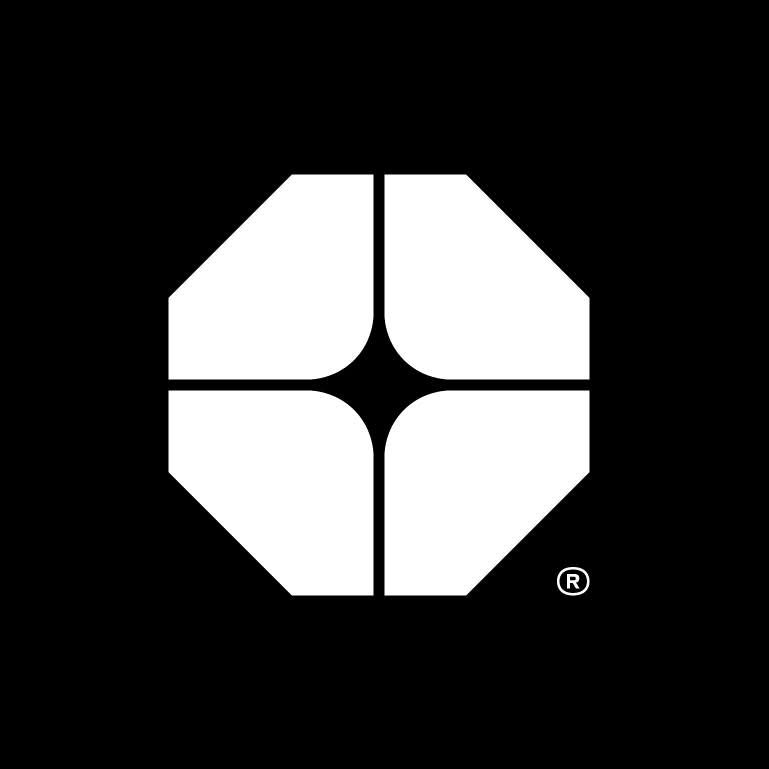
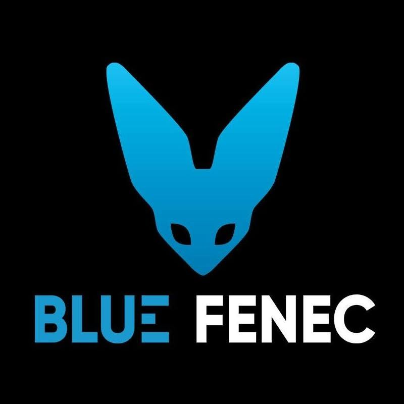
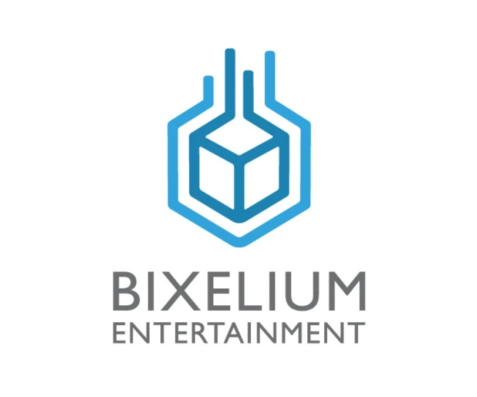
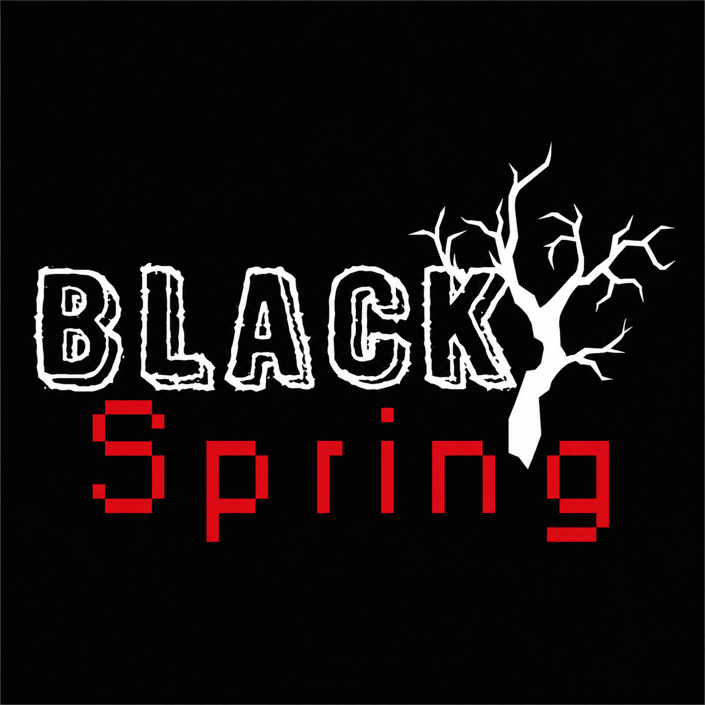
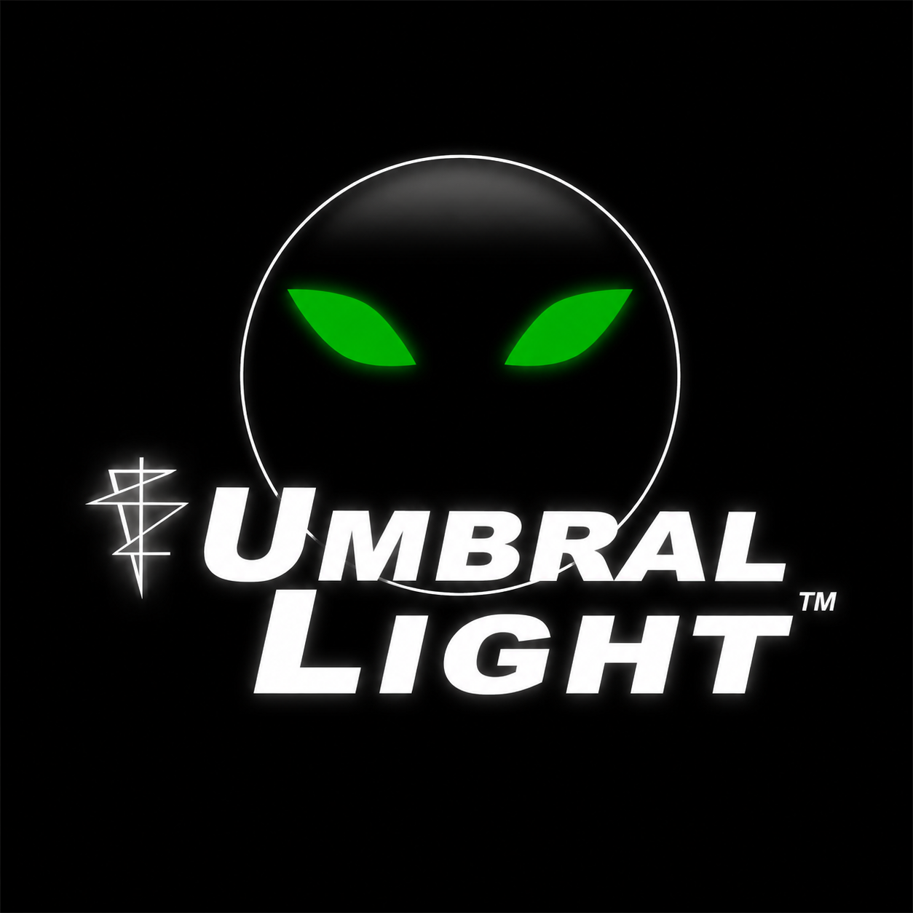
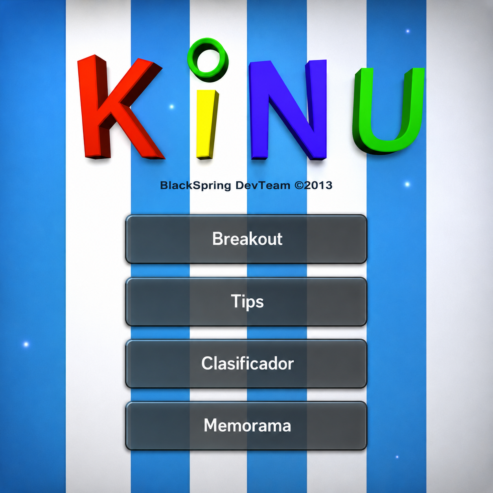

Desarrollador de Videojuegos, Realidad Virtual y Aumentada.
Toca cada tarjeta para ver detalles
Toca cualquier tarjeta para ver detalles, videos y screenshots
¡Juega a Starco Bounce Madness directamente en tu navegador! Toca aquí para abrir el juego en pantalla completa.

Desarrollo de videojuegos, VR y AR para clientes empresariales: capacitación, simulación y marketing experiencial.

Estudio especializado en Realidad Virtual y Videojuegos. Creamos experiencias inmersivas para capacitar y divertir.

Un estudio más grande, resultado de la unión de tres estudios que formaban parte de un club de desarrolladores de videojuegos

Primer estudio fundado junto a mi compañero de tesis. Tratamos de crear videojuegos de terror.

Juego de terror tipo Slenderman desarrollado en Umbral Light Games. Mi primera experiencia en un equipo remoto.

Serious game con Unity y Kinect desarrollado como proyecto de titulación universitaria junto a mi compañero.
Mi primer intento de juego: un juego de peleas de Dragon Ball hecho en XNA después de un curso extracurricular de XNA y C#.
Trabajo profesionalmente desarrollando videojuegos, VR y AR, capacitaciones en VR y experiencias interactivas.
Blue Fenec, estudio especializado en experiencias inmersivas de VR y videojuegos.
Primero fuimos un club de varios estudios de videojuegos; luego formamos un solo estudio más grande para proyectos más ambiciosos.
Junto a mi compañero de tesis, fundamos Black Spring, nuestro primer estudio de desarrollo de videojuegos.
Participé como primer programador en El Sacrificio, un juego de terror tipo Slenderman desarrollado por Umbral Light Games. No fui fundador, pero fui el primer programador que se unió al equipo.
Mi compañero de tesis y yo desarrollamos un serious game utilizando Unity y Kinect, originalmente iba a ser XNA. Mi primer proyecto formal.
Recibí un curso extracurricular de XNA y C# en la universidad. Fue mi primer acercamiento a la programación de videojuegos. Al terminar el curso intenté hacer un juego de peleas de Dragon Ball, experiencia que despertó mi pasión por crear videojuegos.